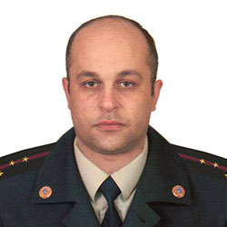
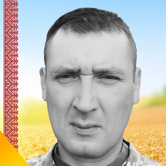
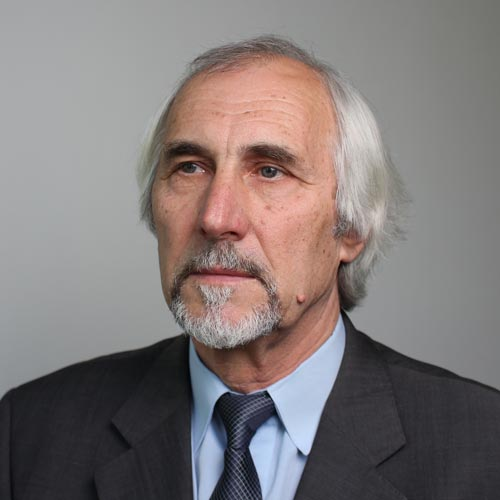

Видатні люди

Моргун Олег Анатолійович (1971—2019)
Народився 1971 року в місті Новогродівка (Донецька область).
Капітан служби цивільного за-хисту, начальник караулу 75-ї державної пожежно-рятувальної частини, 13-й пожежно-рятувальний загін ГУ ДСНС України у Донецькій області (місто Новогродівка). Присвятив 20 років свого життя рятувальній службі. 16 лютого 2019 року на виїзді з села Нетайлове у бік Первомайського (на захід від сели-ша Піски Ясинуватського району) слідчо-оперативна група поліції виявила схрон боєприпасів (на території колишнього
сільськогосподарського підприємства біля недіючого ангару). В пе-редвечірню пору під час проведення ідентифікації вибухонебезпечних предметів стався вибух, співробітник ДСНС Олег Моргун загинув на місці, троє поліцейських зазнали поранень. 18 лютого 2019-го рятувальники Донеччини попрощались з капітаном Моргуном, по всій країні у підрозділах ДСНС було приспущено прапори та вишикувані пожежні автомобілі із включени-ми звуковими сиренами. Похований в місті Новогродівка.

Гопшта Олександр Євгенович (1979-2022)
Солдат, військовослужбовець ЗС України 1979 р.н., гранатометник 2 парашутно-десантного взводу 1 парашутно-десантної роти 1 парашутно-десантного батальйону в/ч А1126, загинув 25.04.2022 року поблизу м.Авдіївка в боях з російськими окупантами в ході відбиття російського вторгнення в Україну . Нагороджений орденом «За мужність» III ступеня (посмертно).

Скакун Ярослав Іванович (* 1949)
Народився 1 лютого 1949 року в селі Розвадів Миколаївського району Львівської об-ласті. Закінчив Львівський інститут прикладного та декоративного мистецтва (1977). За-служений діяч мистецтв УРСР (1989). Народний художник України (2006).Професор кафедри монументально-декоративної скульптури Львівської національної академії мистецтв. З 2002р. і до сьогодні веде клас скульптури. Працює в галузі станко-вої та монументальної скульптури. З травня 2016р. - завідувач кафедрою монументально-декоративної скульптури у Львівській національній академії мистецтв. Створив пам'ятник Т. Г. Шевченку для міста Новогродівка.